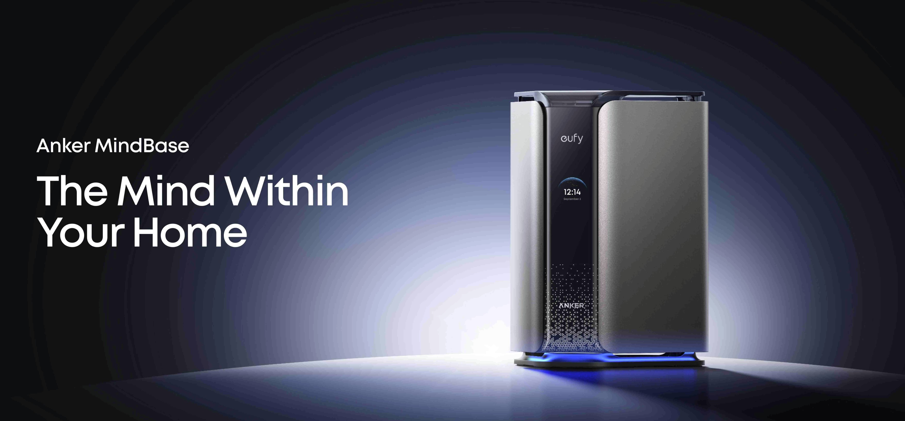
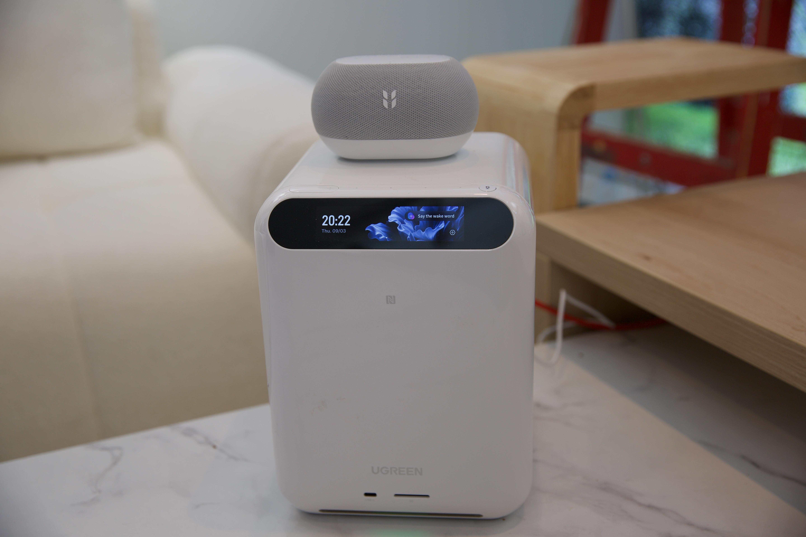
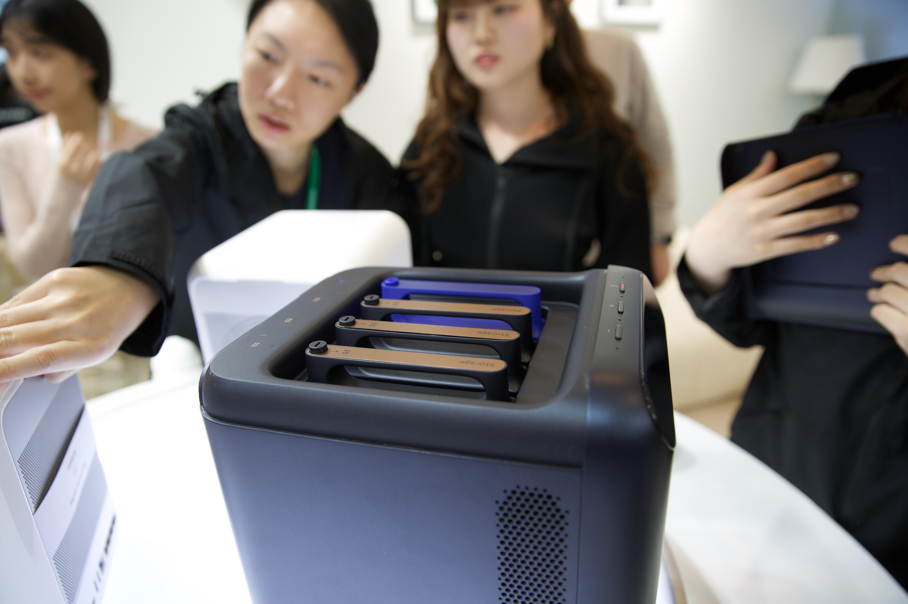

Local AI hubs collide as IFA closes: Anker MindBase vs Ugreen HomeAgent

IFA Berlin wraps today (Sep 4–8). Two vendors that made their names on chargers and NAS both showed up pitching the same product shape: a Matter controller that also runs on-device AI and keeps camera footage in the house, without a monthly storage plan.
Anker MindBase (unveiled Sep 3) is a Matter 1.5 controller with Wi-Fi, Bluetooth, Thread, and Zigbee, a 26-TOPS on-device AI card (TrueSmart Agent), and expandable storage up to 48TB. Anker says it will talk to Apple HomeKit Secure Video, Alexa, Google Home, and Home Assistant, and plans later “agents” for energy and cleaning after security. The first kit pairs MindBase with the TrackLight Cam S1; also at IFA: Video Doorbell S4 at $299.99 (late September) and Window Camera E10 at $69.99 (later this year). MindBase itself still has no price or ship date.

Ugreen HomeAgent got a Verge hands-on (Sep 4). Three hubs: HA100, HA100 Pro, and MasterAgent MA100 on Nvidia Jetson Thor T5000 (up to 2,070 TFLOPS). Kickstarter early-bird (October): about $899 / $2,999 / $9,999, with retail roughly double after. Voice assistant is Uliya. Matter controller support is real in the demo (Nanoleaf + blinds), but phase one is lights, switches, sensors, and curtains, and Ugreen wants you on its approved list (Aqara, ThirdReality, SwitchBot, Eve named so far). Push notifications and remote camera viewing still need the internet; cloud Uliya is optional.

Same week, same hall, two “brain of the home” boxes. Local-first pitch is the story; price and Matter breadth decide whether either is more than a booth.